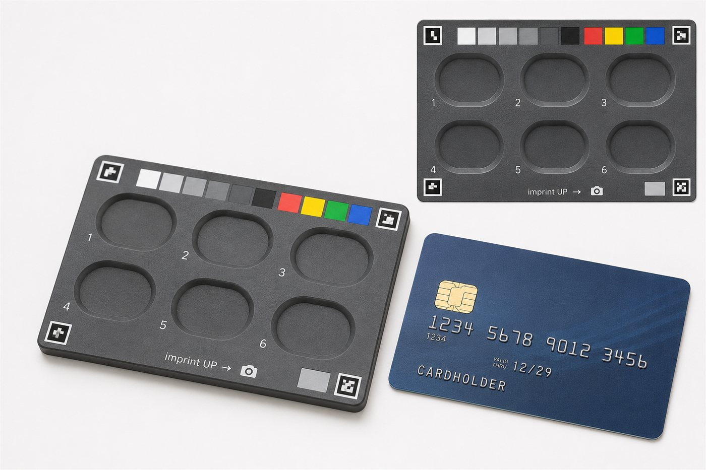

MyPillSafe
Five brains. Three honest outcomes.
The Wrong Pill Should Never Go Unnoticed
A medication-safety assistant for seniors and Canadians with language barriers —
it reads the prescription, verifies pills by photo, and answers questions in your language.
When it isn't sure, it says so.
Capstone MVP · Decision-Support Only
Conestoga College
Graduate Program in AI & ML
Capstone Project · 2026
mypillsafe.ca
The Question
The riskiest moment in home medication use is mundane: a loose pill out of
its bottle. In a weekly organizer or a shared household, many tablets are small, white
and round — and "which pill is this?" is a daily question with a non-trivial cost of
getting it wrong.
1 in 4
Canadian seniors is prescribed 10+ drug classes (CIHI)
~5×
adverse-drug-reaction hospitalization risk at 10+ medications (CIHI)
Verify, Don't Identify
- Open-set pill ID from consumer photos is unreliable — the NLM challenge winner reached only 43% top-5.
- Our measured ceiling on the 7,055 marketed Canadian tablets & capsules: 38.4% with a perfect imprint read, 1.3% without.
- Canadian pills genuinely collide: 13 different products are all the same "blue diamond tablet, SIL 25".
- Within one patient's 5-medication profile, collision odds fall to ~0.3% — so MyPillSafe verifies against your list, with an explicit right to abstain, and never guesses against the whole formulary.
Objectives
- Turn a prescription photo into a DIN-linked medication profile the user approves line by line.
- Warn when a photographed pill does not match the profile — tuned so a false "verified" is the rarest event.
- Answer medication questions only from Health Canada monographs, cited, in the user's language.
- Abstain honestly whenever the evidence is thin — abstention is a designed outcome, not a failure.
Technology
Frontend
React 18 · TypeScript · PWA · EN/FR i18n (756 keys, lockstep-guarded)
Backend
FastAPI · PostgreSQL · 227 automated tests
Vision
FastSAM (zero-shot) · ResNet18 shape · colorimetric colour · PP-OCR dual-read imprint
Language
qwen2.5:7b local proposer + 6 deterministic guardrails · Claude Haiku 4.5 cloud voice
Data
Health Canada DPD · 6,803 product monographs · 3.9 M passages
Ops
Docker · nginx/TLS · GPU brains sidecar over Tailscale
The Five-Brain Architecture — the AI that talks is never the AI that decides
1 · Prescription → Profile
Label photo
→
Prescription Readerlocal OCR + local LLM proposer
→
6 deterministic guardrailscatalogue cross-check · no invented times
→
YOU approvenothing auto-committed
→
DIN-linked profile
2 · Pill photo → Verdict
Pill on capture card
→
Pill Visioncolour · shape · imprint ×2
→
Deterministic Matcherweights 55/25/15/5 · auditable formula, not ML
→
vs YOUR profile only
✓ Verified
? Needs a closer look — abstain
✗ Doesn't match — stop
3 · Question → Cited answer
Question, any of EN·FR·…
→
Monograph RetrievalDIN-scoped · dosing refused outright
→
Answer Voicecloud LLM · phrases only, decides nothing
→
Claim-source re-checkpolarity guard
→
Cited answer, your language
Why the split is deterministic-first: in evaluation, a language model answered a
sulfa-allergy question against its own cited contraindication source. Every decision on this
poster's flows is made by an auditable rule; the only generative step is phrasing — and it is
re-checked against its sources.
Measured Results — reported honestly
180/180
pills detected on real phone photos (15 OTC products)
1.25%
false-accept rate, 9 of 720 wrong-profile trials (1.15% held-out CV)
31.1%
first-shot verify — deliberately low; the system prefers to abstain
1 → 0
safety events, shipped Rx parser (24 labels): the one recorded event was closed by a label-side guard (G6)
81%
answers surfaced in top-5 passages after intent routing (was 70%)
$0.49
cloud cost for the full 120-question Q&A evaluation (~½¢ each)
The finding we didn't expect: zero-shot models beat our fine-tuned ones on
2 of 3 vision heads on real photos. Studio benchmarks overstated real-world transfer — a
negative result that now shapes the pipeline and anchors the paper.
All figures are development-set diagnostics with pre-registered pass/fail bars —
quoted as evidence of method, never as product claims. Confirmatory capture study: pending (right panel).
PillSafeTray v2
Work in progress

Design render — not a photograph. Tray body is print-ready; the confirmatory capture study is pre-registered and pending.
- Bank-card footprint (85.6 × 54 mm); six wells, imprint-up; doses of 7–8 use two loads.
- Calibrated colour patches + four corner markers → the phone photo becomes a small, repeatable studio shot.
- Flash forced on: measured to rescue a dim room to ≈ daylight verify rates — lighting is the dominant capture lever measured (12/29 first-shot proxy; hard debossed imprints fail most).
- Pending: 88-photo pilot → pre-registered 600-photo confirmatory; endpoints M1 usability, M2 safety (0 false accepts over ~630 strays ⇒ ≤0.48% by rule of three).
Scientific Foundation
NLM Pill Image Recognition Challenge — IEEE AIPR 2016 · the 43% that reframed the task
MobileDeepPill — MobiSys 2017 · attribute decomposition on-phone
ePillID — CVPR-W 2020 · the low-shot reality of pill imagery
GO-PILL — MDPI Mathematics 2026 · debossed imprints are the hard OCR case
MEDIC — Nature Medicine 2024 · guarded, catalogue-checked Rx extraction beats raw LLMs; our six guardrails descend from its five
Hanley & Lippman-Hand — JAMA 1983 · the rule of three sizes our safety claims
In preparation: "Verify, Don't Identify: Profile-Constrained
Pill Verification from Consumer Photos with a Printed Capture Card" — the negative results are contributions.
Future Work
- Print the tray + run the pre-registered capture study (NB08, incl. multi-pill scenes).
- The imprint decision: stay zero-shot, or fine-tune on independent hand-keyed labels.
- Colour-boundary refinement (white/grey split first) · cheque-deposit-style auto-capture.
Team
Muthuraj JayakumarProject Lead · ML Architecture
Sumanth ReddyBackend & Systems Integration
Lohith ReddyFrontend & User Experience
Ali OzdemirData Engineering · Reference Pipeline
Abdullah MohammedQuality Assurance & Evaluation
Decision-support only. Not a medical device — always confirm with a licensed pharmacist or physician.
Interface in EN · FR — answers in the language you choose
Live at mypillsafe.ca